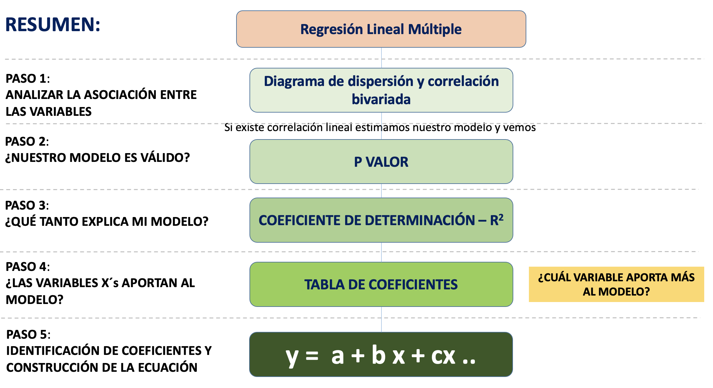

Práctica dirigida 10

Regresión linea múltiple
Hasta el momento, nos hemos encontrado en el campo del análisis bivariado. Sin embargo, en el mundo social, difícilmente se pueden explicar los fenómenos de interés con una sola variable. Incluso si nos interesa evaluar el efecto de un a variable en específico sobre un fenómeno de estudio, hay muchos otros factores que podrían influir en aquello que nos interesa explorar. Por ello, necesitamos recurrir al análisis multivariado y conocer el concepto de control estadístico.
El control estadístico nos permite “eliminar” explicaciones alternativas, en tanto se aisla el efecto de otras variables. La idea es:
Evaluar si la asociación entre X - Y permanece si se remueve el efecto de otra variable, es decir, si se controla por una tercera variable.
Se analiza la relación entre X - Y para valores similares o iguales de una variable Z. De esta manera se elimina la influencia de Z en la relación entre X - Y. Es un paso en el establecimiento de X -> Y.
Si la relación entre X - Y desaparece cuando se controla por Z, se dice que la relación era espúrea.
Sobre la regresión lineal múltiple:

Seguiremos los siguientes pasos para el análisis:

Aplicación práctica
Factores que determinan el acceso a la información en los Estados
El acceso a la información es fundamental para el funcionamiento de cualquier Estado democrático, ya que promueve la transparencia, la responsabilidad y la participación ciudadana.
Para poder realizar el análisis se han revisado las siguientes fuentes:
Digital Access Index El Índice de Acceso Digital es utilizado para medir y evaluar el nivel de acceso a las tecnologías digitales y a internet. Proporciona una medida de hasta qué punto las personas y las comunidades pueden utilizar y beneficiarse de las tecnologías digitales.
Egov-index El Índice de Gobierno Electrónico es una medida que evalúa el nivel de desarrollo y adopción de tecnologías de la información y la comunicación (TIC) en el sector público. Este índice se utiliza para medir la capacidad de los gobiernos para proporcionar servicios en línea, promover la participación ciudadana y utilizar las TIC de manera efectiva en la gestión gubernamental.
Democracy Index El Índice de Democracia es un índice que mide el estado de la democracia en países de todo el mundo. Es elaborado por The Economist (EIU) y evalúa el funcionamiento de los procesos e instituciones democráticas.
A partir de la información recolectada se ha creado una base de datos llamada Egov.

library(rio)
Egov=import("EGov.xlsx")
names(Egov)## [1] "pais" "participaciónDigital"
## [3] "Servicios_Online" "Capital_Humano"
## [5] "Telecommunicacion_Infrastructura" "ProcesoElectoral"
## [7] "Policulture" "accesoInformacion"
## [9] "UsuariosInternet"No olviden el análisis descriptivo antes de hacer los modelos.
Modelo 1
library(tidyverse)
modelo1 = lm(accesoInformacion ~participaciónDigital+Servicios_Online+Capital_Humano +Telecommunicacion_Infrastructura+ProcesoElectoral+ Policulture +UsuariosInternet ,data=Egov)
summary(modelo1)##
## Call:
## lm(formula = accesoInformacion ~ participaciónDigital + Servicios_Online +
## Capital_Humano + Telecommunicacion_Infrastructura + ProcesoElectoral +
## Policulture + UsuariosInternet, data = Egov)
##
## Residuals:
## Min 1Q Median 3Q Max
## -0.204651 -0.033054 0.002505 0.032268 0.116256
##
## Coefficients:
## Estimate Std. Error t value Pr(>|t|)
## (Intercept) -0.1208398 0.0263792 -4.581 1.13e-05 ***
## participaciónDigital -0.0788712 0.0914304 -0.863 0.39004
## Servicios_Online 0.0809775 0.0948445 0.854 0.39491
## Capital_Humano 0.2968634 0.0555961 5.340 4.43e-07 ***
## Telecommunicacion_Infrastructura 0.3561180 0.0782623 4.550 1.28e-05 ***
## ProcesoElectoral 0.0075843 0.0019182 3.954 0.00013 ***
## Policulture 0.0139957 0.0043417 3.224 0.00163 **
## UsuariosInternet 0.0015629 0.0006815 2.293 0.02355 *
## ---
## Signif. codes: 0 '***' 0.001 '**' 0.01 '*' 0.05 '.' 0.1 ' ' 1
##
## Residual standard error: 0.06194 on 121 degrees of freedom
## Multiple R-squared: 0.926, Adjusted R-squared: 0.9217
## F-statistic: 216.3 on 7 and 121 DF, p-value: < 2.2e-16Interpretamos 😎
¿El modelo es válido?
Establezcamos nuestras hipótesis:
- H0: El modelo de regresión no es válido
- H1: El modelo de regresión es válido (variable X aporta al modelo)
Luego nos fijamos en el p-value Como el p valor es < 2.2e-16 entonces podemos afirmar que hay suficiente evidencia para rechazar la H0, por lo que concluimos que el modelo sí es válido como modelo de predicción.
¿Qué tanto explica el modelo?
Observamos el R2 ajustado.
Analizar cuánto de la variabilidad de la variable dependiente (y) es explicada por las variables independientes elegidas, para ello revisamos el R2 (Adjusted R-squared, por ser un modelo lineal múltiple).
En nuestro modelo, este arrojó el valor de 0.9217, por lo que podemos concluir que el modelo explica aproximadamente el 92.2% (0.9217*100) de la variabilidad en el acceso a la información (variable dependiente). En otras palabras, este valor alto de R cuadrado ajustado indica que el modelo se ajusta muy bien a los datos y hace un buen trabajo al explicar la relación entre las variables independientes y la variable dependiente. Sin embargo, el valor del R cuadrado ajustado no te dice nada sobre la significancia estadística de las variables individuales, ni sobre la causalidad. Por ello analizaremos también las variables de forma independiente en el siguiente paso.
Recordemos que el R cuadrado puede tomar valores entre 0 y 1. Un R cuadrado de 1 indica que el modelo explica toda la variabilidad de la variable Y. Un R cuadrado de 0 indica que el modelo no explica nada de la variabilidad de la variable Y.
¿Las variables aportan al modelo?
Revisamos p-value por cada variable independiente.
- Esperamos obtener un p-value <0.05.
- Nos damos cuenta que no todas las variables independientes tienen un p-value <0.05, es el caso de: participaciónDigital y Servicios_Online
¿Cuáles son los coeficientes de la ecuación?
Podemos obtener extraer los coeficientes del modelo:
No olvidar identificar el signo de cada coeficiente, este tendrá repercusión en la ecuación y su futura aplicación
modelo1$coefficients## (Intercept) participaciónDigital
## -0.120839771 -0.078871158
## Servicios_Online Capital_Humano
## 0.080977535 0.296863439
## Telecommunicacion_Infrastructura ProcesoElectoral
## 0.356118022 0.007584279
## Policulture UsuariosInternet
## 0.013995704 0.001562898De esa manera puedo hallar la ecuación:
\[ Y = -0.12 + \text{participaciónDigital} \times (-0.078) + \text{Servicios\_Online} \times (0.080) + \text{Capital\_Humano} \times (0.29) + \text{Telecommunicacion\_Infrastructura} \times (0.35) + \text{ProcesoElectoral} \times (0.0075) + \text{Policulture} \times (0.013) + \text{UsuariosInternet} \times (0.0015) \]
Es decir, se tienen las siguientes relaciones entre VD y las VI:
Por cada unidad adicional de puntaje en participación digital, el índice de acceso a la información disminuye en 0.078 puntos (relación inversa).
Por cada unidad adicional de puntaje de servicios online, el índice de acceso a la información aumenta en 0.08 puntos. (relación directa).
Por cada unidad adicional de puntaje en Capital Humano, el índice de acceso a la información aumenta en 0.08 puntos (relación directa).
Por cada unidad adicional de puntaje de telecomunicaciones e infraestructura, el índice de acceso a la información aumenta en 0.35 puntos. (relación directa).
Por cada unidad adicional de puntaje de Procesos Electorales, el índice de acceso a la información aumenta en 0.0075 puntos. (relación directa).
Por cada unidad adicional de puntaje de Cultura política, el índice de acceso a la información aumenta en 0.013 puntos. (relación directa).
Por cada unidad adicional de puntaje de acceso de Usuarios a Internet, el índice de acceso a la información aumenta en 0.0015 puntos. (relación directa).
OJO: La ecuación de la recta debe incluir TODAS las variables analizadas, tengan o no una influencia significativa en la VD.
¿Qué sucede si retiro las variables independientes que no aportan al modelo 1? Veamos un segundo modelo 👀 .
Modelo 2
library(dplyr)
library(ggplot2)
modelo2 = lm(accesoInformacion ~Capital_Humano +Telecommunicacion_Infrastructura+ProcesoElectoral+ Policulture +UsuariosInternet ,data=Egov)
summary(modelo2)##
## Call:
## lm(formula = accesoInformacion ~ Capital_Humano + Telecommunicacion_Infrastructura +
## ProcesoElectoral + Policulture + UsuariosInternet, data = Egov)
##
## Residuals:
## Min 1Q Median 3Q Max
## -0.205352 -0.037077 0.002991 0.035621 0.111936
##
## Coefficients:
## Estimate Std. Error t value Pr(>|t|)
## (Intercept) -0.1220640 0.0262044 -4.658 8.15e-06 ***
## Capital_Humano 0.2884448 0.0538523 5.356 4.02e-07 ***
## Telecommunicacion_Infrastructura 0.3513669 0.0774659 4.536 1.34e-05 ***
## ProcesoElectoral 0.0075854 0.0018682 4.060 8.66e-05 ***
## Policulture 0.0145801 0.0042686 3.416 0.000863 ***
## UsuariosInternet 0.0016876 0.0006405 2.635 0.009498 **
## ---
## Signif. codes: 0 '***' 0.001 '**' 0.01 '*' 0.05 '.' 0.1 ' ' 1
##
## Residual standard error: 0.06163 on 123 degrees of freedom
## Multiple R-squared: 0.9255, Adjusted R-squared: 0.9225
## F-statistic: 305.8 on 5 and 123 DF, p-value: < 2.2e-16Interpretamos 😎
¿El modelo es válido?
Establezcamos nuestras hipótesis:
- H0: El modelo de regresión no es válido
- H1: El modelo de regresión es válido (variable X aporta al modelo)
Luego nos fijamos en el p-value Como el p valor es < 2.2e-16 entonces podemos afirmar que hay suficiente evidencia para rechazar la H0, por lo que concluimos que el modelo sí es válido como modelo de predicción.
¿Qué tanto explica el modelo?
Observamos el R2 ajustado.
Analizar cuánto de la variabilidad de la variable dependiente (y) es explicada por las variables independientes elegidas, para ello revisamos el R2 (Adjusted R-squared).
En nuestro modelo, este arrojó el valor de 0.9225, por lo que podemos concluir mi modelo explica aproximadamente el 92.25% (0.9225*100) de la variabilidad en el acceso a la información (variable dependiente). E
¿Las variables aportan al modelo?
Revisamos p-value por cada variable independiente.
- Esperamos obtener un p-value <0.05.
- Todas las variables independientes aportan al modelo.
¿Cuáles son los coeficientes de la ecuación?
modelo2$coefficients## (Intercept) Capital_Humano
## -0.122063970 0.288444800
## Telecommunicacion_Infrastructura ProcesoElectoral
## 0.351366905 0.007585449
## Policulture UsuariosInternet
## 0.014580126 0.001687594De esa manera puedo hallar la ecuación:
\[ Y = -0.12 + \text{Capital\_Humano} \times (0.288) + \text{Telecommunicacion\_Infrastructura} \times (0.35) + \text{ProcesoElectoral} \times (0.00758) + \text{Policulture} \times (0.0145) + \text{UsuariosInternet} \times (0.0016) \] En este modelo, las variables se interpretan de la siguiente manera:
Por cada unidad adicional de puntaje en Capital Humano, el índice de acceso a la información aumenta en 0.288 puntos (relación directa).
Por cada unidad adicional de puntaje de telecomunicaciones e infraestructura, el índice de acceso a la información aumenta en 0.35 puntos. (relación directa).
Por cada unidad adicional de puntaje de Procesos Electorales, el índice de acceso a la información aumenta en 0.00758 puntos. (relación directa).
Por cada unidad adicional de puntaje de Cultura política, el índice de acceso a la información aumenta en 0.0145 puntos. (relación directa).
Por cada unidad adicional de puntaje de acceso de Usuarios a Internet, el índice de acceso a la información aumenta en 0.0016 puntos. (relación directa).
¿Mi modelo ha mejorado?
Ligeramente, mientras que el modelo 1 explicaba un 92.17% y el modelo 2 92.25%. A pesar de que mi modelo 1 tiene un rango de explicación alto, con el modelo 2 se ha podido demostrar que el modelo puede mejorar (así la mejora no ha haya sido sustancial).
También es importante notar que los coeficientes estimados de las VI han cambiado.
Predicción
Si el puntaje en CapitalHumano es 0.8, de telecomunicaciones e infraestructura es 0.6, de proceso electoral de 9 y de Usuarios de internet es de 56.
Y = -0.12 + 0.29(0.8) + 0.35(0.6) + 0.01 (9) + 0.002(56)
Y = -0.12 + 0.232 + 0.21 + 0.09 + 0.112
Y = 0.524
En este caso, el índice de acceso a la información es de 0.524 puntos.
Qué factores determinan la calidad de sueño del personal de salud en pandemia
La pandemia de COVID-19 tuvo una repercusión significativa en el personal de salud en todo el mundo. Los trabajadores de la salud estuvieron en la primera línea de batalla, enfrentando desafíos sin precedentes. Además de los riesgos físicos, el personal de salud enfrentó una carga emocional y psicológica abrumadora. Una de las principales preocupaciones era la calidad del sueño del personal de salud, pues podía repercutir directamente en la calidad de atención de los pacientes.
- Q1: Edad
- Q2: Género (0 = “Mujer”, 1 = “Hombre”)
- Q7: ¿Se encentra en la primera línea de atención del Covid-19? (0 = “No”, 1 = “Si”)
- Q8: ¿Trabaja desde casa? (0 = “No”, 1 = “Si”)
- Q11: ¿Tiene niños en casa? (0 = “No”, 1 = “Si”)
- Q13: ¿Cuantas horas ha dormido en promedio la semana pasada?
Covid=import("covid_pd12.csv")
names(Covid)## [1] "V1" "Q1" "Q2" "Q7" "Q8" "Q11" "Q13"str(Covid)## 'data.frame': 321 obs. of 7 variables:
## $ V1 : int 419 420 421 423 424 425 426 427 428 429 ...
## $ Q1 : int 46 28 44 57 65 30 37 43 37 40 ...
## $ Q2 : int 1 0 0 0 0 0 0 0 0 0 ...
## $ Q7 : int 1 0 1 0 0 0 0 0 0 0 ...
## $ Q8 : int 0 1 0 1 1 1 1 1 1 0 ...
## $ Q11: int 1 0 0 0 0 0 0 1 0 1 ...
## $ Q13: int 4 5 10 8 8 8 7 8 7 5 ...Reviso las variables dicotómicas Q2,Q7,Q8 y Q11
table(Covid$Q2)##
## 0 1
## 258 63table(Covid$Q7)##
## 0 1
## 240 81table(Covid$Q8)##
## 0 1
## 148 173table(Covid$Q11)##
## 0 1
## 183 138OJO: como esta vez las variables son dicotómicas tratadas como numéricas, la interpretamos de la siguiente manera:
Si alguien es hombre, se multiplica el coeficiente por 1. Si se es mujer, se multiplica dicho coeficiente por 0.
Si alguien perteneció a primera línea, se multiplica dicho coeficiente estimado por 1. Si no ha sido de primera línea, se multiplica por 0.
Si alguien trabaja desde casa, se multiplica dicho coeficiente estimado por 1. Si no ha trabajado desde casa, se multiplica por 0.
Si alguien tiene hijos en casa, se multiplica dicho coeficiente estimado por 1. Si no los tiene, se multiplica por 0.
Modelo 3
Hacemos uso de todas las variables de la base de datos. Veamos los resultados.
modelo3 = lm(Q13 ~Q1+Q2+Q7+Q8+Q11 ,data=Covid)
summary(modelo3)##
## Call:
## lm(formula = Q13 ~ Q1 + Q2 + Q7 + Q8 + Q11, data = Covid)
##
## Residuals:
## Min 1Q Median 3Q Max
## -4.4698 -0.8146 0.1175 0.7244 10.6064
##
## Coefficients:
## Estimate Std. Error t value Pr(>|t|)
## (Intercept) 7.2635032 0.3870248 18.768 < 2e-16 ***
## Q1 0.0002082 0.0072750 0.029 0.9772
## Q2 0.1165666 0.2214669 0.526 0.5990
## Q7 -0.9295386 0.2287652 -4.063 6.11e-05 ***
## Q8 0.0813975 0.1946472 0.418 0.6761
## Q11 -0.5411523 0.1775847 -3.047 0.0025 **
## ---
## Signif. codes: 0 '***' 0.001 '**' 0.01 '*' 0.05 '.' 0.1 ' ' 1
##
## Residual standard error: 1.55 on 315 degrees of freedom
## Multiple R-squared: 0.109, Adjusted R-squared: 0.09483
## F-statistic: 7.705 on 5 and 315 DF, p-value: 7.486e-07Interpretamos 😎
¿El modelo es válido?
Establezcamos nuestras hipótesis:
- H0: El modelo de regresión no es válido
- H1: El modelo de regresión es válido (variable X aporta al modelo)
Luego nos fijamos en el p-value Como el p valor es 7.486e-07, entonces podemos afirmar que hay suficiente evidencia para rechazar la H0, por lo que concluimos que el modelo sí es válido como modelo de predicción.
¿Qué tanto explica el modelo?
Observamos el R2 ajustado.
Analizar cuánto de la variabilidad de la variable dependiente (y) es explicada por las variables independientes elegidas, para ello revisamor el R2 (Adjusted R-squared).
En nuestro modelo, este arrojó el valor de 0.09483 , por lo que podemos concluir el modelo explica aproximadamente el 9.48% de la variabilidad en el promedio de las horas de sueño del personal de salud (variable dependiente).
¿Las variables aportan al modelo?
Revisamos p-value por cada variable independiente.
- Esperamos obtener un p-value <0.05.
- Esta vez las variables que sí aportan al modelo son: Q7 (primera línea contra Covid) y Q11 (Ttiene niños en casa)
¿Cuáles son los coeficientes de la ecuación?
Coeficientes:
modelo3$coefficients## (Intercept) Q1 Q2 Q7 Q8
## 7.2635031668 0.0002081714 0.1165666305 -0.9295386165 0.0813975254
## Q11
## -0.5411522614De esa manera puedo hallar la ecuación:
\[ Y = 7.2635 + \text{Edad} \times (-0.0002) + \text{Genero} \times (0.1167) + \text{Primera línea} \times (-0.9295) + \text{Trabaja desde casa} \times (0.0814) + \text{Tiene niños en casa} \times (-0.5412) \]
¿Cómo interpretamos los coeficientes en este caso?
Por cada año adicional de edad, el tiempo de sueño disminuye en 0.0002 horas (relación inversa).
Si la persona es hombre, su tiempo de sueño aumenta en 0.1167 horas (relación directa).
Si la persona ha estado en primera línea en la lucha contra la pandemia de Covid, su tiempo de sueño disminuye en 0.9295 horas de sueño (relacuón inversa).
Si la persona trabaja desde casa, su tiempo de sueño aumenta en 0.0814 horas (relación directa).
Si la persona tiene niños en su casa, su tiempo de sueño disminuye en 0.5412 horas (relación inversa).
¿Qué sucede si retiramos aquellas variables que no aportan al modelo? Hagamos un siguiente modelo.
Modelo 4
Aplicamos el principio de parsimonia para crear un nuevo modelo solo con las variables que aportan.
modelo4 = lm(Q13 ~Q7+Q11 ,data=Covid)
summary(modelo4)##
## Call:
## lm(formula = Q13 ~ Q7 + Q11, data = Covid)
##
## Residuals:
## Min 1Q Median 3Q Max
## -4.3490 -0.8403 0.1597 0.6510 10.6510
##
## Coefficients:
## Estimate Std. Error t value Pr(>|t|)
## (Intercept) 7.3490 0.1205 61.009 < 2e-16 ***
## Q7 -0.9678 0.2011 -4.813 2.31e-06 ***
## Q11 -0.5409 0.1764 -3.066 0.00236 **
## ---
## Signif. codes: 0 '***' 0.001 '**' 0.01 '*' 0.05 '.' 0.1 ' ' 1
##
## Residual standard error: 1.544 on 318 degrees of freedom
## Multiple R-squared: 0.1076, Adjusted R-squared: 0.102
## F-statistic: 19.17 on 2 and 318 DF, p-value: 1.375e-08Interpretamos 😎
¿El modelo es válido?
Establezcamos nuestras hipótesis:
- H0: El modelo de regresión no es válido
- H1: El modelo de regresión es válido (variable X aporta al modelo)
Luego nos fijamos en el p-value Como el p valor es 1.375e-08 entonces podemos afirmar que hay suficiente evidencia para rechazar la H0, por lo que concluimos que el modelo sí es válido como modelo de predicción.
¿Qué tanto explica el modelo?
Observamos el R2 ajustado.
Analizar cuánto de la variabilidad de la variable dependiente (y) es explicada por las variables independientes elegidas, para ello revisamor el R2 (Adjusted R-squared).
En nuestro modelo, este arrojó el valor de 0.102 , por lo que podemos concluir mi modelo explica aproximadamente el 10.2% de la variabilidad en el promedio de las horas de sueño del personal de salud (variable dependiente).
¿Las variables aportan al modelo? 🤔
Revisamos p-value por cada variable independiente.
- Esperamos obtener un p-value <0.05.
- Todas las variables aportan al modelo.
¿Cuáles son los coeficientes de la ecuación?
modelo4$coefficients## (Intercept) Q7 Q11
## 7.3490240 -0.9677539 -0.5409321De esa manera puedo hallar la ecuación:
\[ Y = 7.35 + \text{Primera linea} \times (-0.97) + \text{Tiene niños en casa} \times (-0.54) \]
En este caso, los coeficientes se interpretan de la siguiente manera:
Si la persona perteneció a la primera línea de lucha contra la pandemia de Covid, su tiempo de sueño disminuye en 0.97 horas (relación inversa).
Si la persona tiene niños en casa, su tiempo de sueño disminuye en 0.54 horas (relación inversa).
¿Mi modelo ha mejorado?
Ligeramente: el R2 ajustado, de 0.0948 (9.48%), subió a 0.102 (10.2%) al momento de explicar la variabilidad de horas de sueño de las personas.
Predicción
Supondiendo que alguien NO es de primera línea y SI tiene niños en casa:
Y = 7. 35 - 0.97(0) - 0.54(1)
Y = 7.35 - 0.54
Y = 6.81
Se interpreta que, si alguien no es de primera línea y sí tiene niños en casa, sus horas de sueño serán, aproximadamente, 6.81 horas.